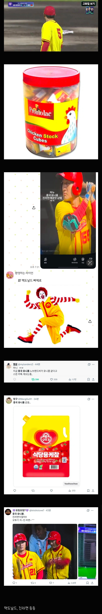
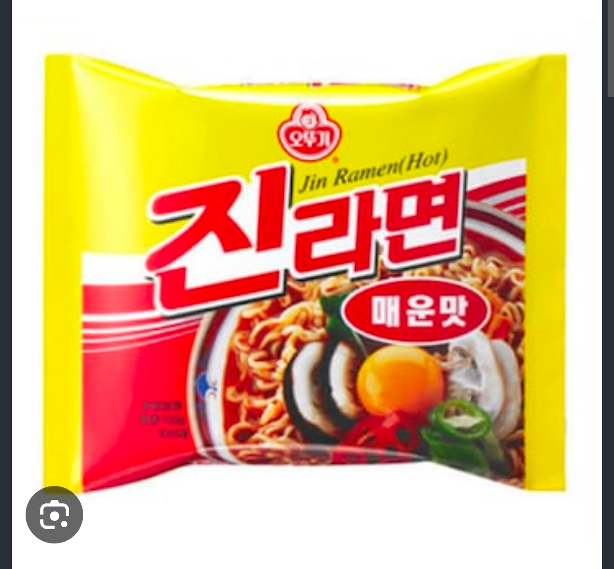

저게 중국사람들 좋아하는 색조합이잖아
ㄹㅇ ㅋㅋㅋ
맛있는 음식의 색조합과 동일하다는 앙증맞은 사고가
나도 진매ㅜ생각햇는데 ㅋㅋ
중국 축구 유니폼도 저 스타일이더니만 어쩐지 점점 우리 유니폼이랑 비슷하게 가더라...ㅋㅋㅋ
보자마자 란란루 생각나긴하더라 씹 ㅋㅋㅋㅋ
씹 촌스럽
아 터졌다 ㅋㅋㅋㅋ
머스터드 케찹
빨강색 노랑색 환장하잖아 조합이 좀 그래서 그렇지
빨강 베이스에 노랑 살짝 섞지 ㅋㅋㅋ
아이언맨같이 좀 새련된 빨강노랑 색조합좀 해봐
중국이 금색이랑 빨간색 좋아한다며
오뚜기 회장님 결국엔...